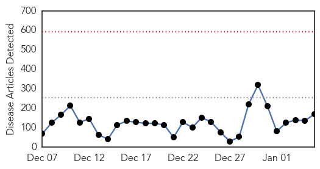
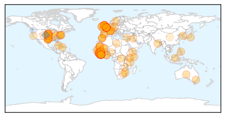
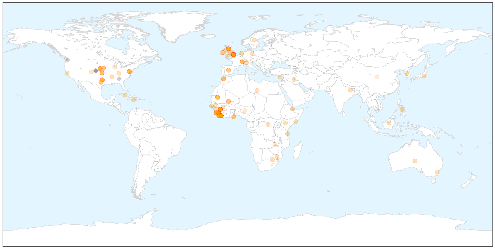
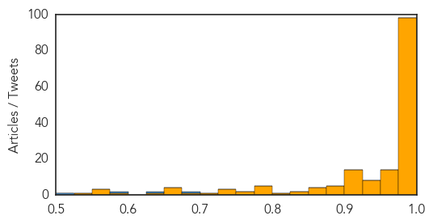

Unknown
30-Day Web Trend
0 alerts, 0 warnings

30-Day Twitter Trend
0 alerts, 0 warnings

Article Locations


Article Confidences

Top Articles:
- 0.999
- Flu season again requires precautions
- 0.998
- Flu cases, hospitalizations rise sharply as season peaks
- 0.998
- Flu season continues to worsen
- 0.990
- CDC declares national flu epidemic
- 0.979
- UPDATE: Chattanooga Ranks #1 for Flu Activity - WRCBtv.com
- 0.956
- Teenager's Death Shows How Flu Can Be Fatal
- 0.933
- Flu season Rx: Good hygiene, shot recommended for troops overseas this year
- 0.931
- Flu cases on the rise in Delaware — NewsWorks
- 0.917
- Chicago Tribune
- 0.917
- Chicago Tribune
- 0.917
- Chicago Tribune
- 0.917
- Chicago Tribune
- 0.917
- Chicago Tribune
- 0.917
- Chicago Tribune
- 0.917
- Chicago Tribune
- 0.917
- Chicago Tribune
- 0.917
- Chicago Tribune
- 0.917
- Chicago Tribune
- 0.917
- Chicago Tribune
- 0.917
- Chicago Tribune
- 0.917
- Chicago Tribune
- 0.917
- Chicago Tribune
- 0.917
- Chicago Tribune
- 0.917
- Chicago Tribune
- 0.910
- The world windows to Thailand
- 0.903
- Officials Discuss Flu Prevention in West Virginia Schools
- 0.890
- Flu hitting Arkansas hard this year
- 0.878
- Flu hits East Tennessee hard, Knoxville among sickest cities in the nation
- 0.866
- Hollande says plans to attend Jan 15 four-way Ukraine talks
- 0.863
- First bird flu death of 2015 child who was infected in 2014: Spox
- 0.848
- The World On Arirang
- 0.753
- Local warning issued over winter sickness bug which has closed wards at local hospitals
- 0.724
- Modernisation of public health sector
- 0.715
- School districts fighting against flu
- 0.694
- Giant Panda Dies of Canine Distemper, 3 More Infected; China Closes Wildlife Centre
- 0.689
- W.Va. officials join forces to fight flu in schools
- 0.689
- W.Va. officials join forces to fight flu in schools
- 0.674
- Health Minister Shri J P Nadda reviews JS AES cases in
- 0.668
- Free flu shots all across Shelby County Tuesday
- 0.659
- Schools prep for students to return back to school amidst flu season
- 0.657
- AES cases in Tamil Nadu, Odisha Current News, Odisha Latest Headlines
- 0.635
- Doctors blame lack of resources for poor health care
- 0.630
- Five hospitals declare 'major incidents'
- 0.630
- Five hospitals declare 'major incidents'
- 0.626
- Hospital trolley crisis deepens
- 0.625
- Half of Diphu Public Health Engineering Department Schemes are Out of Order
- 0.617
- Hospital trolley crisis deepens
- 0.608
- Study finds CDC recommendations ignored health risks
- 0.604
- Jamaican doctors blame lack of resources for poor health care -- NationNews Barbados -- Local, Regional and International News nationnews.com
- 0.603
- FAO, Partners Seek Global Response to Deadly Crop Disease, Articles
Showing top 50 articles...
Top Tweets:
- 0.548
- Treatment with flu antivirals is recommended for ppl at high risk of serious flu complications & ppl very sick w/ flu http://t.co/aUgDez7fCv
Ebola
30-Day Web Trend
0 alerts, 0 warnings

30-Day Twitter Trend
0 alerts, 0 warnings

Article Locations

X

Article Confidences
Top Articles:
- 1.000
- U.S. aid worker exposed to Ebola arrives in Nebraska
- 1.000
- Ebola Lecture Aims To Dispel Myths Surrounding The Virus
- 1.000
- British nurse in critical condition with Ebola
- 1.000
- Stricken British nurse to be injected with Ebola survivor's blood as infection cases top 8,000
- 1.000
- US Medical Worker Exposed to Ebola Overseas Arrives in Omaha
- 1.000
- US medical worker exposed to Ebola overseas arrives in Omaha
- 1.000
- Ebola outbreak: Liberia to reopen schools as spread of disease decreases
- 1.000
- UK Ebola nurse Pauline Cafferkey's condition has 'stabilised' but still critical, Jeremy Hunt says
- 1.000
- US health worker exposed to Ebola reaches Omaha
- 1.000
- Ebola deaths top 8,000; exposures trigger health worker evacuations
- 1.000
- Experts say 2014 a busy year for public health workers
- 1.000
- Charity reviews Ebola safety procedures, UK nurse in ‘critical condition’ — RT UK
- 1.000
- 20,000 cases on, Ebola mysteries remain
- 0.999
- US Health Care Worker Exposed To Ebola In Sierra Leone Arrives In Nebraska
- 0.999
- Latest Ebola News: US medical worker exposed to Ebola overseas - Officials
- 0.999
- Ebola crisis: Health authorities set up screening facilities at Papua New Guinea airport
- 0.999
- British nurse with Ebola critical but stable
- 0.999
- Ebola-Infected UK Nurse Fighting for Her Life — Naharnet
- 0.999
- Ebola Infected UK Nurse Fighting For Her Life
- 0.999
- Health Worker Exposed to Ebola in Sierra Leone Reaches U.S. for Observation
- 0.999
- Ebola-infected UK nurse fighting for her life
- 0.999
- Edmonton Aid Worker To Battle Psychological Toll Of Virus
- 0.999
- Ebola outbreak death toll passes 8,000
- 0.999
- 2-year-old boy playing in bat-infested tree 'ground zero' patient for Ebola epidemic
- 0.999
- Ebola-infected UK nurse fighting for her life
- 0.998
- Ebola screening: U.S. takes Mali off list
- 0.998
- Travelers from Mali no longer need to go through enhanced Ebola screenings
- 0.998
- The UN Must Investigate Ebola Outbreak in West Africa
- 0.998
- Health worker exposed to Ebola in Sierra Leone reaches U.S. for observation
- 0.998
- There is no Ebola case in Haiti, says acting PM
- 0.998
- Ebola survivors share stories via mobile app - Emirates 24
- 0.998
- American exposed to Ebola arrives at Nebraska facility for monitoring
- 0.998
- First Ebola patient diagnosed in Britain in critical condition
- 0.997
- Ebola: charity to investigate how British nurse caught the virus
- 0.997
- British nurse with Ebola fights for her life
- 0.997
- Anesthesiologists Face the Ebola Epidemic—Time to 'Educate, Train and Prepare'
- 0.997
- IU profs left Liberia as Ebola was 'about to explode'
- 0.997
- With no new Ebola cases, CDC lifts travel restrictions in Mali
- 0.996
- Somalia denies registering first Ebola case
- 0.996
- Pregnant Ebola survivor stumps doctors
- 0.996
- App to help fight Ebola stigma - Africa
- 0.996
- British Ebola nurse 'stabilised'
- 0.995
- Health Workers Returning From West Africa Will Not Be Quarantined
- 0.995
- Minister: British Ebola nurse ‘stabilised’ – BorneoPost Online
- 0.995
- US Ends Ebola Screenings for Travelers from Mali
- 0.995
- British Ebola nurse stabilized: minister
- 0.995
- LIBERIA: Oxfam Ebola Response Makes Impact. 35,000 residents benefit in Montserrado
- 0.995
- Save the Children 'urgently reviewing' how Ebola staff use protective suits
- 0.994
- Liberia plans to reopen schools in February as Ebola spread ebbs
- 0.994
- Britain says it has strengthened Ebola screening after first case
Showing top 50 articles...
Top Tweets:
- 0.688
- RT: Sierra Leone MOH Ebola Update Jan 3 & 4: 67 New Conf. Cases & 25 Susp.; 49 New Conf. Deaths https://t.co/ZrVmY05HWo
- 0.626
- RT: In case you missed it read a piece by on the stress of reporting on Ebola while living in Sierra Leone http://…
- 0.585
- CDC comms expert Nicole developed & disseminated Ebola-prevention messages in Sierra Leone. Read her story: http://t.co/f3dj0NCNUn.
- 0.521
- U.S. health worker exposed to Ebola in Sierra Leone arrives in Nebraska http://t.co/ovwtDRRSCL TackleEbola